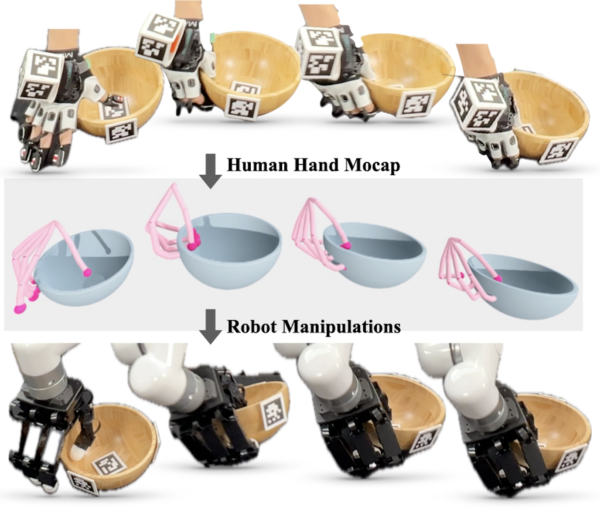
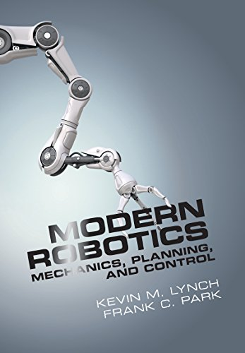

Hi! I'm a first-year CS PhD student at Stanford University, currently working with Prof. Karen Liu and Prof. Jeannette Bohg.
Previously, I earned an M.S. in Robotics at Carnegie Mellon University with Prof. Shubham Tulsiani, and a B.S. (summa cum laude) in Mechanical Engineering and Mathematics at Seoul National University with Prof. Hanbyul Joo.
My research goal is to enable robots to perform complex manipulation tasks: those involving contact-rich interactions and high-precision dexterous control.
* : Equal Contribution, † : Equal Advising



CoRL X-Embodiment Workshop, 2024


ICRA, 2024 (Best Conference Paper Award)

Workshop Organizing
- 2nd Workshop on Dexterous Manipulation, CoRL 2025
- Dexterity with Multifingered Hands, ICRA 2026
Reviewer
- ICML, NeurIPS, ICLR, ICRA, RA-L, CoRL, CVPR